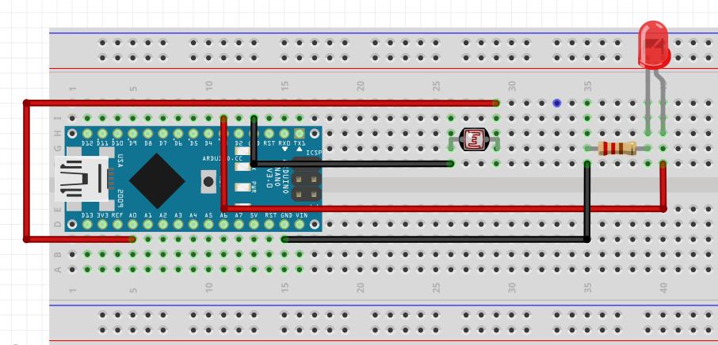

Ortam ışığına göre LED'in otomatik yanıp sönmesini sağlayan basit bir Arduino projesi.
const int ldrPin = A0;
const int ledPin = 3;
void setup() {
pinMode(ledPin, OUTPUT);
}
void loop() {
int ldrValue = analogRead(ldrPin);
if (ldrValue < 400) {
digitalWrite(ledPin, HIGH);
} else {
digitalWrite(ledPin, LOW);
}
delay(100);
}
